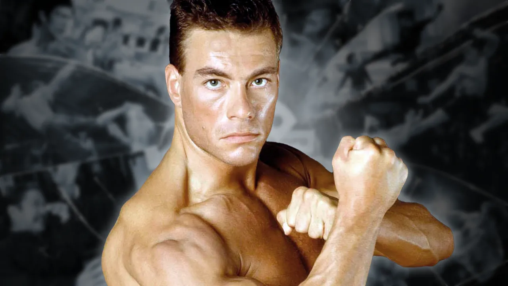

Jean-Claude Camille François Van Varenberg (French: [ʒɑ̃ klod kamij fʁɑ̃swa vɑ̃ vaʁɑ̃bɛʁɡ], Flemish: [vɑɱ ˈvaːrə(m)bɛr(ə)x]; born 18 October 1960), known professionally as Jean-Claude Van Damme (French: [vɑ̃ dam], Flemish: [vɑn ˈdɑmə]), is a Belgian martial artist and actor. Born and raised in Brussels, his father enrolled him in a Shotokan karate school at the age of ten, which led Van Damme to hold the rank of 2nd-dan black belt in karate, and compete in several karate and kickboxing competitions. As a teenager, he won the middleweight championship of the European Professional Karate Association in 1979 and the Mr. Belgium bodybuilding title in 1978. With the desire of becoming an actor in Hollywood, he moved to the United States in 1982, where he worked on several films, until he got his break as the lead in the martial arts film Bloodsport (1988). He became a popular action film star and followed up with commercially successful films such as Cyborg, Kickboxer (both 1989), Lionheart, Death Warrant (both 1990), Double Impact (1991), Universal Soldier (1992), Nowhere to Run, Hard Target (both 1993), Timecop, Street Fighter (both 1994), Sudden Death (1995), The Quest, which marked his directorial debut, and Maximum Risk (both 1996). He achieved sex symbol status in the late 1980s and early 1990s. Between 1993 and 1998, three Hong Kong filmmakers collaborated with Van Damme for their debuts in Western cinema: John Woo, Tsui Hark, and Ringo Lam.[1] After a decline in popularity in the late 1990s and early 2000s, he returned to prominence with the critically acclaimed crime drama JCVD (2008). His big return to the action genre was in The Expendables 2 (2012), in which he starred as the villain, opposite Sylvester Stallone's character. From thereon, he continued starring in action films and doing extensive voice work, appearing in the well-received Enemies Closer (2013), The Bouncer, Kickboxer: Retaliation (both 2018), Minions: The Rise of Gru (2022), and Darkness of Man (2024). In television, he starred in the Ridley Scott-produced Jean-Claude Van Johnson (2016-2017). In video games, he appeared as Johnny Cage in Mortal Kombat 1 and as Max Valliant in Hitman: World of Assassination. Regarded as an icon of action and martial arts cinema, his films have grossed over $1 billion worldwide, making him one of the most successful action stars of all time.[2] Outside his film career, Van Damme has publicly supported various conservationist causes and animal rights organisations.
At the age of 12,[18] Van Damme joined the Centre National de Karaté (National Center of Karate) under the guidance of Claude Goetz in Belgium. Van Damme trained for four years and he earned a spot on the Belgian Karate Team; he later trained in full-contact karate and kickboxing with Dominique Valera.[19] According to Van Damme, "it was tough growing up. I was kind of geeky, and physically I was not gifted".[20] At the age of 15, he started his competitive karate career in Belgium. From 1976 to 1980, he compiled a record of 44 victories and four defeats in tournament and non-tournament semi-contact matches. He was a member of the Belgium Karate Team when it won the European Karate Championship on 26 December 1979 at La Coupe François Persoons Karate Tournament in Brussels.[19][21] He placed second at the Challenge Coupe des Espoirs Karate Tournament (1st Trials). At the three-day tournament, he defeated 25 opponents before losing in the finals to teammate Angelo Spataro.[19] On 8 March 1980, in Brussels, Belgium, he competed against his former teammate Patrick Teugels at the Forest National Arena on the undercard of the Dan Macaruso-Dominique Valera Professional Karate Association Light-Heavyweight World Championship bout.[19] Prior to this match, Teugels had defeated Van Damme twice by decision, including a match for the Belgium Lightweight Championship. Van Damme had a 1977 victory over Teugels. Teugels was coming off an impressive showing at the World Association of Kickboxing Organizations World Championships four months earlier, and was favored by some to win this match. According to reports, and Patrick Teugels' own interview (with photos), Teugels lost to Van Damme by TKO in the 1st round. Teugels was kicked in the nose and was unable to continue as a result.[19] In a 2013 interview, Van Damme called this fight his most memorable match.[22] He began his full-contact career in 1977, when Claude Goetz promoted the first ever full-contact karate tournament in Belgium. From 1977 to 1982, he compiled a record of 18 victories (18 knockouts) and one defeat. [citation needed] In 1979, he had an uncredited role in André Delvaux's Woman Between Wolf and Dog, a Belgian-French drama film starring Marie-Christine Barrault, and Rutger Hauer. In 1980, he caught the attention of Professional Karate Magazine publisher and editor Mike Anderson and multiple European champion Geert Lemmens. Both men tabbed Van Damme as an upcoming prospect.[23] Van Damme retired from competition in 1982. During his early life, he sold flowers in restaurants, and got a loan to open a gym to save some money before his move to the United States.[24] Aptly titled California Gym, it was opened in 1979 and catered to "karate, dancing, aerobics, bodybuilding – everything". Van Damme adds that "I wrote special training programs for people, and it was a very upbeat atmosphere with music". At its peak, California Gym was making $15,000 per month; "when I decided to sell my gym my father thought I was crazy. He said, 'What the hell are you doing? You have the best gym in Brussels. You have a sports car, a beautiful apartment, you’re making so much money that you can have anything you want — and now you’re going to sell your business and go to America'. He was very upset".
